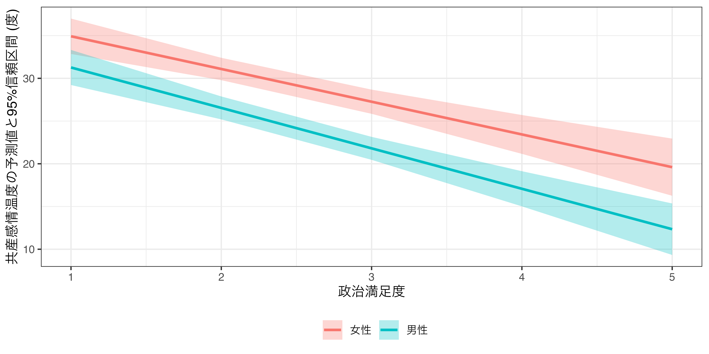

マクロ政治データ分析実習
11/ 交互作用
関西大学総合情報学部
授業開始前に
すぐに実習できるように準備しておきましょう。
- JDCat分析ツールを起動しておいてください。
- 本日授業用のプロジェクトを作成するか、既存のプロジェクトを開いてください。
- LMSから実習用データをダウンロードしておいてください。
- ダウンロードしてデータをプロジェクト・フォルダーにアップロードしてください。
- プロジェクト・フォルダー内に
Dataフォルダーを作成し、そこにアップロードしましょう。
- プロジェクト・フォルダー内に
- 実習用コードを入力するスクリプト、またはQuartoファイルを開き、以下のコードを入力&実行してください（コピペ可）。
- トラブルが生じた場合、速やかにTAを呼んでください。
- 時間に余裕があれば、スライド内のコードも書いておきましょう。
交互作用とは
交互作用とは
主な説明変数（\(X\)）と応答変数（\(Y\)）の関係において、\(X\)が\(Y\)に与える影響がその他の変数（\(Z\)）の影響を受ける場合

- \(Z\)は調整変数 (moderation variable; moderator)と呼ばれる。
- 調整変数はダミー変数でも、連続変数でも可能
- \(X\)が\(Y\)に与える影響は\(Z\)によって変わる。
- 例）\(Z=1\)の場合、\(X\)が1上がると\(Y\)は2上がるが、\(Z=2\)の場合、\(X\)が1上がると\(Y\)は5上がる。
- \(\Rightarrow\) \(Z\)の値によって\(X \rightarrow Y\)の効果（傾き）が変わる。
回帰分析における交互作用
説明変数、調整変数、交差項を投入した回帰モデル
\[ \hat{Y} = \alpha + \beta_1 X + \beta_2 Z + \beta_3 X \cdot Z \]
- 交差項 (interaction term)
- 説明変数に調整変数をかけた変数 ( \(X \cdot Z\) )
- 変数\(X\)が\(Y\)に与える効果は\(\beta_1\)? \(\leftarrow\) 間違い
- 回帰式において\(X\)は\(\beta_3\)にも登場する。
- 式を変形すると…
\[ \hat{Y} = \alpha + (\beta_1 + \beta_3 Z) X + \beta_2 Z \]
- 変数\(X\)が\(Y\)に与える効果は \(\beta_1 + \beta_3 Z\)
- \(\Rightarrow\) 変数\(X\)が\(Y\)に与える影響は\(Z\)の値に依存する。
調整変数がダミー変数の場合
調整変数\(Z\)が0、または1の値のみをとるダミー変数の場合（\(Z \in \{0, 1\}\)）
\[ \hat{Y} = \alpha + \beta_1 X + \beta_2 Z + \beta_3 X \cdot Z \]
- 調整変数（\(Z\)）が0か1かによって、\(X\)が\(Y\)に与える影響が変化する。
- \(Z = 0\)の場合：\(\hat{Y} = \alpha + \beta_1 X + \beta_2 Z\)
- \(X\)が\(Y\) に与える影響は\(\beta_1\)
- \(Z = 1\)の場合：\(\hat{Y} = \alpha + \beta_1 X + \beta_2 Z + \beta_3 X = \alpha + (\beta_1 + \beta_3) X + \beta_2 Z\)
- \(X\)が\(Y\)に与える影響は\(\beta_1 + \beta_3\)
調整変数がダミー変数の場合
以下のモデルの場合…
\[ \begin{align} \hat{Y} & = 3 + 2 X + 1 Z + 3 X \cdot Z \\ & = 3 + (2 + 3Z) X + 1 Z \end{align} \]
- \(X\)の係数は\(2 + 3Z\)
- \(Z = 0\)なら… (赤)
- \(X\)が1上がると、\(Y\)は2上がる。
- \(\hat{Y} = 3 + 2X + 1Z\)であるため
- \(Z = 1\)なら… (青)
- \(X\)が1上がると、\(Y\)は5上がる。
- \(\hat{Y} = 3 + 5X + 1Z\)であるため
- \(\Rightarrow\) \(Z\)の値に応じて\(X\)の傾きが変化する。
調整変数が連続変数の場合
調整変数\(Z\)が無数の値をとる連続変数の場合
\[ \hat{Y} = \alpha + \beta_1 X + \beta_2 Z + \beta_3 X \cdot Z \]
- 調整変数（\(Z\)）の値によって、\(X\)が\(Y\)に与える影響が変化する。
- \(Z\)が1の場合：\(\hat{Y} = \alpha + \beta_1 X + \beta_2 Z + \beta_3 X \cdot 1 = \alpha + (\beta_1 + \beta_3) X + \beta_2 Z\)
- \(X\)が\(Y\)に与える影響は\(\beta_1 + 1\beta_3\)
- \(Z\)が2.5の場合：\(\hat{Y} = \alpha + \beta_1 X + \beta_2 Z + \beta_3 2.5 \cdot X = \alpha + (\beta_1 + 2.5\beta_3) X + \beta_2 Z\)
- \(X\)が\(Y\)に与える影響は\(\beta_1 + 2.5\beta_3\)
- \(Z\)が6の場合：\(\hat{Y} = \alpha + \beta_1 X + \beta_2 Z + \beta_3 6 \cdot X = \alpha + (\beta_1 + 6\beta_3) X + \beta_2 Z\)
- \(X\)が\(Y\)に与える影響は\(\beta_1 + 6\beta_3\)
- 無数のケースがあり得る。
調整変数が連続変数の場合
以下のモデルの場合…
\[ \begin{align} \hat{Y} & = 2 + 3 X + 2 Z - 1 X \cdot Z \\ & = 2 + (3 - 1Z) X + 2 Z \end{align} \]
- \(X\)の係数は\(3 - Z\)
- \(Z = -1\)なら\(X\)の係数は\(3 - (-1) = 4\)（赤）
- \(X\)が1上がると、\(Y\)は4上がる。
- \(\hat{Y} = 2 + 4X + 2Z\)であるため
- \(Z = 2\)なら\(X\)の係数は\(3 - 2 = 1\)（緑）
- \(X\)が1上がると、\(Y\)は1上がる。
- \(\hat{Y} = 2 + 1X + 2Z\)であるため
- \(Z = 3.5\)なら\(X\)の係数は\(3 - 3.5 = -0.5\)（青）
- \(X\)が1上がると、\(Y\)は0.5下がる。
- \(\hat{Y} = 2 - 0.5 X + 2Z\)であるため
交差項を入れた回帰分析
実習用データ
# A tibble: 3,000 × 6
TempKyosan Female Age Satisfaction Interest Ideology
<dbl> <dbl> <dbl> <dbl> <dbl> <dbl>
1 20 1 69 4 4 9
2 20 1 47 1 1 7
3 0 1 37 3 3 11
4 0 0 51 4 3 11
5 20 0 38 2 3 7
6 0 0 71 5 4 11
7 10 0 47 3 3 9
8 0 0 71 4 4 11
9 25 0 75 3 4 9
10 40 1 66 2 3 6
# ℹ 2,990 more rows実習用データの概要
| 変数 | 説明 | 備考 |
|---|---|---|
TempKyosan |
日本共産党に対する感情温度 | 高いほど好感 |
Female |
女性ダミー | 0: 男性 / 1: 女性 |
Age |
回答者の年齢 | |
Satisfaction |
政治満足度 | 高いほど満足 |
Interest |
回答者の政治関心 | 高いほど関心あり |
Ideology |
回答者のイデオロギー | 高いほど保守的 |
記述統計量
今回のデータはすべて連続変数扱いとなるため、前処理は不要
- 名目変数もダミー変数になると連続変数と同じ扱いでOK
Descriptive Statistics
jes_df
N: 3000
Mean Std.Dev Min Max N.Valid
------------------ ------- --------- ------- -------- ---------
TempKyosan 26.88 24.95 0.00 100.00 3000.00
Female 0.50 0.50 0.00 1.00 3000.00
Age 47.34 15.63 18.00 75.00 3000.00
Satisfaction 2.45 1.08 1.00 5.00 3000.00
Interest 2.74 0.83 1.00 4.00 3000.00
Ideology 6.34 2.10 1.00 11.00 3000.00問題設定
政治満足度が共産党に対する感情温度に与える影響を調べたい。ただし、この影響は一定ではなく、性別や年齢によって異なるかも知れない。政治満足度が共産党に対する感情温度に与える影響の不均一性を調べるためにはどうすれば良いだろうか。仮説検定に使用する有意水準は5%とする（\(\alpha = 0.05\)）。
モデル1
- 応答変数：共産党に対する感情温度（
TempKoysan） - 主な説明変数：政治満足度（
Satisfaction） - 調整変数：女性ダミー（
Female）\(\leftarrow\) ダミー変数（二値変数） - 統制変数：政治関心（
Interest）、イデオロギー（Ideology）、年齢（Age）
モデル2
- 応答変数：共産党に対する感情温度（
TempKoysan） - 主な説明変数：政治満足度（
Satisfaction） - 調整変数：年齢（
Age）\(\leftarrow\) 連続変数 - 統制変数：政治関心（
Interest）、イデオロギー（Ideology）、女性ダミー（Female）
調整変数がダミー変数の場合（モデル1）
政治満足度（= 説明変数）が共産党に対する感情温度（= 応答変数）に与える影響は性別（= 調整変数）によって変わる。
調整変数がダミー変数の場合の回帰式（モデル1）
\[ \widehat{\mbox{TempKyosan}} = \alpha + \beta_1 \mbox{Satisfaction} + \beta_2 \mbox{Female} + \beta_3 \mbox{Interest} + \beta_4 \mbox{Ideology} + \beta_5 \mbox{Age} + \beta_6 (\mbox{Satisfaction} \cdot \mbox{Female}) \]

調整変数が連続変数の場合（モデル2）
政治満足度（= 説明変数）が共産党に対する感情温度（= 応答変数）に与える影響は年齢（= 調整変数）によって変わる。

調整変数が連続変数の場合の回帰式（モデル2）
\[ \widehat{\mbox{TempKyosan}} = \alpha + \beta_1 \mbox{Satisfaction} + \beta_2 \mbox{Age} + \beta_3 \mbox{Interest} + \beta_4 \mbox{Ideology} + \beta_5 \mbox{Female} + \beta_6 (\mbox{Satisfaction} \cdot \mbox{Age}) \]

交差項を入れた回帰分析の推定方法
lm()内の回帰式（formula）に2つの変数を*でつなぐだけ
A * Bは説明変数としてA、B、A\(\times\)Bを同時に投入することを意味する。
| 係数 | 標準誤差 | t値 | p値 | |
|---|---|---|---|---|
| 切片 | 49.275 | 2.587 | 19.047 | < 0.001 |
| 政治満足度 | −4.732 | 0.561 | −8.429 | < 0.001 |
| 女性 | 2.752 | 2.186 | 1.259 | 0.208 |
| 政治関心 | 0.217 | 0.571 | 0.381 | 0.703 |
| イデオロギー | −1.887 | 0.214 | −8.815 | < 0.001 |
| 年齢 | −0.040 | 0.030 | −1.347 | 0.178 |
| 政治満足度 * 女性 | 0.902 | 0.817 | 1.104 | 0.270 |
調整変数がダミー変数の場合（fit1）
- 推定結果
- 共産に対する感情温度の予測値 = 49.28 - 4.73 \(\times\) 政治満足度 + 2.75 \(\times\) 女性ダミー + 0.22 \(\times\) 政治関心 - 1.89 \(\times\) イデオロギー - 0.04 \(\times\) 年齢 + 0.90 \(\times\) 政治満足度 \(\times\) 女性ダミー
- 共産に対する感情温度の予測値 = 49.28 - (4.73 - 0.90 \(\times\) 女性ダミー) \(\times\) 政治満足度 + 2.75 \(\times\) 女性ダミー + 0.22 \(\times\) 政治関心 - 1.89 \(\times\) イデオロギー - 0.04 \(\times\) 年齢
- 政治満足度が共産感情温度に与える影響：-(4.73 - 0.90 \(\times\) 女性ダミーの値)
- 男性の場合（女性ダミーの値 = 0）：-(4.73 - 0.90 \(\times\) 0) = -4.73
- 男性の場合、政治満足度が1単位上がると、共産に対する感情温度は約4.73度下がる。
- 女性の場合（女性ダミーの値 = 1）：-(4.73 - 0.90 \(\times\) 1) = -3.83
- 女性の場合、政治満足度が1単位上がると、共産に対する感情温度は約3.83度下がる。
- \(\rightarrow\) 政治満足度が共産に対する感情温度に与える影響は性別によって変わる。
- 男性の場合（女性ダミーの値 = 0）：-(4.73 - 0.90 \(\times\) 0) = -4.73
調整変数がダミー変数の場合（fit1）

fit1_pred <- predictions(fit1, newdata = datagrid(Satisfaction = 1:5,
Female = 0:1))
fit1_pred |>
mutate(Female = if_else(Female == 1, "女性", "男性")) |>
ggplot() +
geom_pointrange(aes(x = Satisfaction, y = estimate,
ymin = conf.low, ymax = conf.high, color = Female),
position = position_dodge2(0.5)) +
labs(x = "政治満足度", y = "共産感情温度の予測値と95%信頼区間 (度)",
fill = "", color = "") +
theme_bw() +
theme(legend.position = "bottom")
調整変数が連続変数の場合（fit2）
- 推定結果
- 共産に対する感情温度の予測値 = 28.25 + 3.31 \(\times\) 政治満足度 + 0.37 \(\times\) 年齢 - 0.12 \(\times\) 政治関心 - 1.69 \(\times\) イデオロギー + 5.06 \(\times\) 女性ダミー - 0.16 \(\times\) 政治満足度 \(\times\) 年齢
- 共産に対する感情温度の予測値 = 28.25 + (3.31 - 0.16 \(\times\) 年齢) \(\times\) 政治満足度 + 0.37 \(\times\) 年齢 - 0.12 \(\times\) 政治関心 - 1.69 \(\times\) イデオロギー + 5.06 \(\times\) 女性ダミー
- 政治満足度が共産感情温度に与える影響 = (3.31 - 0.16 \(\times\) 年齢の値)
- 20歳の場合（
Ageの値 = 20）：3.31 - 0.16 \(\times\) 20 = 0.11- 20歳の場合、政治満足度が1単位上がると、共産に対する感情温度は約0.11度上がる。
- 40歳の場合（
Ageの値 = 40）：3.31 - 0.16 \(\times\) 40 = -3.09- 40歳の場合、政治満足度が1単位上がると、共産に対する感情温度は約3.09度下がる。
- 60歳の場合（
Ageの値 = 60）：3.31 - 0.16 \(\times\) 60 = -6.29- 60歳の場合、政治満足度が1単位上がると、共産に対する感情温度は約6.29度下がる。
- \(\rightarrow\) 政治満足度が共産に対する感情温度に与える影響は年齢によって変わる。
- 20歳の場合（
調整変数が連続変数の場合 (fit2)
fit2_pred <- predictions(fit2, newdata = datagrid(Satisfaction = 1:5,
Age = c(20, 40, 60)))
fit2_pred |>
mutate(Age = factor(Age, levels = c(20, 40, 60),
labels = c("20歳", "40歳", "60歳"))) |>
ggplot(aes(x = Satisfaction)) +
geom_ribbon(aes(y = estimate, ymin = conf.low, ymax = conf.high,
fill = Age), alpha = 0.3) +
geom_line(aes(y = estimate, color = Age), linewidth = 1) +
labs(x = "政治満足度", y = "共産感情温度の予測値と95%信頼区間 (度)",
fill = "", color = "") +
theme_bw() +
theme(legend.position = "bottom")交互作用の解釈と限界効果
交互作用をどう報告するか
交互作用: 説明変数が応答変数に与える影響は調整変数の値によって変わる
- \(X\)が\(Y\)に与える影響の統計的有意性を検定する際に用いられる検定統計量は「\(X\)の係数 / \(X\)の標準誤差」であるが、ここでの\(X\)の係数と標準誤差は\(Z\)の値によって変わる。
- \(\Rightarrow\) \(Z\)の値によって\(X\)が\(Y\)に与える影響の統計的有意性は変わる。
- 調整変数の値ごとに、説明変数が応答変数に与える影響（= 限界効果; marginal effects）と95%信頼区間を図示する。
- 仮説検定に使用する有意水準（\(\alpha\)）が0.1なら90%信頼区間、0.01なら99%信頼区間を使用
{marginaleffect}パッケージを用いた限界効果の計算
{marginaleffect}パッケージのslopes()関数
variablesには説明変数名を指定する（変数名は必ず"で囲むこと）fit1の場合：調整変数（Female）の値が0と1の場合の限界効果datagrid(Female = c(0, 1))、またはdatagrid(Female = 0:1)
fit2の場合：調整変数（Age）の値が18、19、20、…、75の場合の限界効果datagrid(Age = 18:75)
- 限界効果は
estimate列、\(p\)値はp.value列、95%信頼区間はconf.low（下限）とconf.high（上限） - 仮説検定に使用する有意水準（\(\alpha\)）が0.1な
conf_level = 0.9、0.01ならconf_level = 0.99を追加
調整変数がダミー変数の場合 (fit1)
性別と関係なく、政治満足度は共産感情温度に負の影響を与える。
Female Estimate Std. Error z Pr(>|z|) S 2.5 % 97.5 %
0 -4.73 0.561 -8.43 <0.001 54.7 -5.83 -3.63
1 -3.83 0.611 -6.27 <0.001 31.3 -5.03 -2.63
Term: Satisfaction
Type: response
Comparison: dY/dXFemaleの値が0の場合Satisfactionが1単位上がるとTempKyosanは約-4.73度下がり、\(\alpha = 0.05\)の水準で統計的に有意である。
Femaleの値が1の場合Satisfactionが1単位上がるとTempKyosanは約-3.83度下がり、\(\alpha = 0.05\)の水準で統計的に有意である。
調整変数が連続変数の場合（fit2）
Age Estimate Std. Error z Pr(>|z|) S 2.5 % 97.5 %
18 0.4860 0.912 0.5327 0.594 0.8 -1.30 2.27
19 0.3292 0.890 0.3700 0.711 0.5 -1.41 2.07
20 0.1725 0.867 0.1990 0.842 0.2 -1.53 1.87
21 0.0157 0.842 0.0187 0.985 0.0 -1.63 1.67
22 -0.1411 0.820 -0.1721 0.863 0.2 -1.75 1.47
--- 48 rows omitted. See ?print.marginaleffects ---
71 -7.8227 0.724 -10.8088 <0.001 88.0 -9.24 -6.40
72 -7.9795 0.745 -10.7044 <0.001 86.4 -9.44 -6.52
73 -8.1362 0.768 -10.5922 <0.001 84.7 -9.64 -6.63
74 -8.2930 0.790 -10.4909 <0.001 83.1 -9.84 -6.74
75 -8.4498 0.812 -10.4048 <0.001 81.8 -10.04 -6.86
Term: Satisfaction
Type: response
Comparison: dY/dXAgeが18の場合、SatisfactionはTempKyosanに影響を与えているとは言えない（\(p \geq 0.05\)のため）。Ageが19の場合、SatisfactionはTempKyosanに影響を与えているとは言えない（\(p \geq 0.05\)のため）。- …（省略）…
Ageが75の場合、Satisfactionが1単位上がるとTempKyosanは約-8.4度下がり、\(\alpha = 0.05\)の水準で統計的に有意である。
省略された行の表示
print()内にtopn = Infを追加する。
Age Estimate Std. Error z Pr(>|z|) S 2.5 % 97.5 %
18 0.4860 0.912 0.5327 0.59428 0.8 -1.30 2.274
19 0.3292 0.890 0.3700 0.71138 0.5 -1.41 2.073
20 0.1725 0.867 0.1990 0.84225 0.2 -1.53 1.871
21 0.0157 0.842 0.0187 0.98511 0.0 -1.63 1.666
22 -0.1411 0.820 -0.1721 0.86337 0.2 -1.75 1.465
23 -0.2978 0.798 -0.3731 0.70908 0.5 -1.86 1.267
24 -0.4546 0.776 -0.5859 0.55791 0.8 -1.98 1.066
25 -0.6114 0.752 -0.8130 0.41623 1.3 -2.09 0.863
26 -0.7681 0.730 -1.0521 0.29277 1.8 -2.20 0.663
27 -0.9249 0.709 -1.3054 0.19177 2.4 -2.31 0.464
28 -1.0817 0.689 -1.5699 0.11643 3.1 -2.43 0.269
29 -1.2384 0.668 -1.8536 0.06379 4.0 -2.55 0.071
30 -1.3952 0.646 -2.1600 0.03078 5.0 -2.66 -0.129
31 -1.5520 0.626 -2.4791 0.01317 6.2 -2.78 -0.325
32 -1.7087 0.608 -2.8114 0.00493 7.7 -2.90 -0.518
33 -1.8655 0.589 -3.1665 0.00154 9.3 -3.02 -0.711
34 -2.0223 0.570 -3.5505 < 0.001 11.3 -3.14 -0.906
35 -2.1790 0.552 -3.9493 < 0.001 13.6 -3.26 -1.098
36 -2.3358 0.536 -4.3603 < 0.001 16.2 -3.39 -1.286
37 -2.4926 0.520 -4.7979 < 0.001 19.3 -3.51 -1.474
38 -2.6493 0.503 -5.2656 < 0.001 22.8 -3.64 -1.663
39 -2.8061 0.489 -5.7370 < 0.001 26.6 -3.76 -1.847
40 -2.9629 0.476 -6.2267 < 0.001 31.0 -3.90 -2.030
41 -3.1196 0.465 -6.7148 < 0.001 35.6 -4.03 -2.209
42 -3.2764 0.453 -7.2263 < 0.001 40.9 -4.17 -2.388
43 -3.4332 0.443 -7.7508 < 0.001 46.6 -4.30 -2.565
44 -3.5900 0.435 -8.2580 < 0.001 52.6 -4.44 -2.738
45 -3.7467 0.429 -8.7380 < 0.001 58.5 -4.59 -2.906
46 -3.9035 0.424 -9.2162 < 0.001 64.8 -4.73 -3.073
47 -4.0603 0.419 -9.6828 < 0.001 71.2 -4.88 -3.238
48 -4.2170 0.417 -10.1021 < 0.001 77.3 -5.04 -3.399
49 -4.3738 0.418 -10.4752 < 0.001 82.9 -5.19 -3.555
50 -4.5306 0.419 -10.8155 < 0.001 88.2 -5.35 -3.710
51 -4.6873 0.422 -11.1132 < 0.001 92.9 -5.51 -3.861
52 -4.8441 0.427 -11.3577 < 0.001 96.9 -5.68 -4.008
53 -5.0009 0.433 -11.5521 < 0.001 100.1 -5.85 -4.152
54 -5.1576 0.441 -11.7059 < 0.001 102.7 -6.02 -4.294
55 -5.3144 0.450 -11.8168 < 0.001 104.6 -6.20 -4.433
56 -5.4712 0.460 -11.8826 < 0.001 105.8 -6.37 -4.569
57 -5.6279 0.472 -11.9195 < 0.001 106.4 -6.55 -4.703
58 -5.7847 0.485 -11.9316 < 0.001 106.6 -6.73 -4.834
59 -5.9415 0.499 -11.9073 < 0.001 106.2 -6.92 -4.963
60 -6.0982 0.514 -11.8529 < 0.001 105.2 -7.11 -5.090
61 -6.2550 0.530 -11.7923 < 0.001 104.2 -7.29 -5.215
62 -6.4118 0.546 -11.7371 < 0.001 103.3 -7.48 -5.341
63 -6.5685 0.564 -11.6535 < 0.001 101.8 -7.67 -5.464
64 -6.7253 0.583 -11.5369 < 0.001 99.9 -7.87 -5.583
65 -6.8821 0.602 -11.4399 < 0.001 98.3 -8.06 -5.703
66 -7.0388 0.621 -11.3331 < 0.001 96.5 -8.26 -5.822
67 -7.1956 0.640 -11.2493 < 0.001 95.1 -8.45 -5.942
68 -7.3524 0.660 -11.1396 < 0.001 93.3 -8.65 -6.059
69 -7.5092 0.682 -11.0153 < 0.001 91.3 -8.85 -6.173
70 -7.6659 0.703 -10.9031 < 0.001 89.5 -9.04 -6.288
71 -7.8227 0.724 -10.8088 < 0.001 88.0 -9.24 -6.404
72 -7.9795 0.745 -10.7044 < 0.001 86.4 -9.44 -6.518
73 -8.1362 0.768 -10.5922 < 0.001 84.7 -9.64 -6.631
74 -8.2930 0.790 -10.4909 < 0.001 83.1 -9.84 -6.744
75 -8.4498 0.812 -10.4048 < 0.001 81.8 -10.04 -6.858
Term: Satisfaction
Type: response
Comparison: dY/dX- 30歳未満の場合、政治満足度（
Satisfaction）は共産感情温度（TempKyosan）に影響を与えるとは言えない。 - 30歳以上の場合のみ、政治満足度は共産感情温度に負の影響を与える。
限界効果の可視化と解釈
可視化
- 調整変数の値が…
- 少数の場合（10個以内）はpoint-rangeプロット（ここでは
fit1_ame） - 多数の場合（11個以上）はリボン+折れ線グラフを使用（ここでは
fit2_ame）
- 少数の場合（10個以内）はpoint-rangeプロット（ここでは
- \(y = 0\)の水平線を追加すると解釈しやすくなる。
geom_hline(yintercept = 0)レイヤーを追加
解釈
- 解釈の際は具体的な数値（ここだと
fit1_ameやfit2_ame）と図両方を見る必要がある。- とりわけ、調整変数（\(Z\)）が連続変数の場合、「\(Z\)がいくらになれば限界効果が統計的に有意になるか」などを判断するために、具体的な数値を見る必要がある。
- 95%信頼区間内に0が含まれていれば、説明変数は応答変数に影響を与えるとは言えないと解釈
- 0が95%信頼区間外にあれば、説明変数は応答変数に影響を与えると解釈可能
fit1_ameの例
fit1_ameの中身と図、両方を見て解釈する。
- 男女関係なく、政治満足度と共産党に対する感情温度の間には統計的に有意な負の関係が見られる。つまり、政治満足度が高い回答者ほど、共産党に対する感情温度は低い傾向がある。たとえば、男性は政治満足度が1単位上がると、共産党に対する感情温度は約4.73度低くなり、女性のそれは約3.83度である。
fit2_ameの例
Age Estimate Std. Error z Pr(>|z|) S 2.5 % 97.5 %
18 0.4860 0.912 0.5327 0.59428 0.8 -1.30 2.274
19 0.3292 0.890 0.3700 0.71138 0.5 -1.41 2.073
20 0.1725 0.867 0.1990 0.84225 0.2 -1.53 1.871
21 0.0157 0.842 0.0187 0.98511 0.0 -1.63 1.666
22 -0.1411 0.820 -0.1721 0.86337 0.2 -1.75 1.465
23 -0.2978 0.798 -0.3731 0.70908 0.5 -1.86 1.267
24 -0.4546 0.776 -0.5859 0.55791 0.8 -1.98 1.066
25 -0.6114 0.752 -0.8130 0.41623 1.3 -2.09 0.863
26 -0.7681 0.730 -1.0521 0.29277 1.8 -2.20 0.663
27 -0.9249 0.709 -1.3054 0.19177 2.4 -2.31 0.464
28 -1.0817 0.689 -1.5699 0.11643 3.1 -2.43 0.269
29 -1.2384 0.668 -1.8536 0.06379 4.0 -2.55 0.071
30 -1.3952 0.646 -2.1600 0.03078 5.0 -2.66 -0.129
31 -1.5520 0.626 -2.4791 0.01317 6.2 -2.78 -0.325
32 -1.7087 0.608 -2.8114 0.00493 7.7 -2.90 -0.518
33 -1.8655 0.589 -3.1665 0.00154 9.3 -3.02 -0.711
34 -2.0223 0.570 -3.5505 < 0.001 11.3 -3.14 -0.906
35 -2.1790 0.552 -3.9493 < 0.001 13.6 -3.26 -1.098
36 -2.3358 0.536 -4.3603 < 0.001 16.2 -3.39 -1.286
37 -2.4926 0.520 -4.7979 < 0.001 19.3 -3.51 -1.474
38 -2.6493 0.503 -5.2656 < 0.001 22.8 -3.64 -1.663
39 -2.8061 0.489 -5.7370 < 0.001 26.6 -3.76 -1.847
40 -2.9629 0.476 -6.2267 < 0.001 31.0 -3.90 -2.030
41 -3.1196 0.465 -6.7148 < 0.001 35.6 -4.03 -2.209
42 -3.2764 0.453 -7.2263 < 0.001 40.9 -4.17 -2.388
43 -3.4332 0.443 -7.7508 < 0.001 46.6 -4.30 -2.565
44 -3.5900 0.435 -8.2580 < 0.001 52.6 -4.44 -2.738
45 -3.7467 0.429 -8.7380 < 0.001 58.5 -4.59 -2.906
46 -3.9035 0.424 -9.2162 < 0.001 64.8 -4.73 -3.073
47 -4.0603 0.419 -9.6828 < 0.001 71.2 -4.88 -3.238
48 -4.2170 0.417 -10.1021 < 0.001 77.3 -5.04 -3.399
49 -4.3738 0.418 -10.4752 < 0.001 82.9 -5.19 -3.555
50 -4.5306 0.419 -10.8155 < 0.001 88.2 -5.35 -3.710
51 -4.6873 0.422 -11.1132 < 0.001 92.9 -5.51 -3.861
52 -4.8441 0.427 -11.3577 < 0.001 96.9 -5.68 -4.008
53 -5.0009 0.433 -11.5521 < 0.001 100.1 -5.85 -4.152
54 -5.1576 0.441 -11.7059 < 0.001 102.7 -6.02 -4.294
55 -5.3144 0.450 -11.8168 < 0.001 104.6 -6.20 -4.433
56 -5.4712 0.460 -11.8826 < 0.001 105.8 -6.37 -4.569
57 -5.6279 0.472 -11.9195 < 0.001 106.4 -6.55 -4.703
58 -5.7847 0.485 -11.9316 < 0.001 106.6 -6.73 -4.834
59 -5.9415 0.499 -11.9073 < 0.001 106.2 -6.92 -4.963
60 -6.0982 0.514 -11.8529 < 0.001 105.2 -7.11 -5.090
61 -6.2550 0.530 -11.7923 < 0.001 104.2 -7.29 -5.215
62 -6.4118 0.546 -11.7371 < 0.001 103.3 -7.48 -5.341
63 -6.5685 0.564 -11.6535 < 0.001 101.8 -7.67 -5.464
64 -6.7253 0.583 -11.5369 < 0.001 99.9 -7.87 -5.583
65 -6.8821 0.602 -11.4399 < 0.001 98.3 -8.06 -5.703
66 -7.0388 0.621 -11.3331 < 0.001 96.5 -8.26 -5.822
67 -7.1956 0.640 -11.2493 < 0.001 95.1 -8.45 -5.942
68 -7.3524 0.660 -11.1396 < 0.001 93.3 -8.65 -6.059
69 -7.5092 0.682 -11.0153 < 0.001 91.3 -8.85 -6.173
70 -7.6659 0.703 -10.9031 < 0.001 89.5 -9.04 -6.288
71 -7.8227 0.724 -10.8088 < 0.001 88.0 -9.24 -6.404
72 -7.9795 0.745 -10.7044 < 0.001 86.4 -9.44 -6.518
73 -8.1362 0.768 -10.5922 < 0.001 84.7 -9.64 -6.631
74 -8.2930 0.790 -10.4909 < 0.001 83.1 -9.84 -6.744
75 -8.4498 0.812 -10.4048 < 0.001 81.8 -10.04 -6.858
Term: Satisfaction
Type: response
Comparison: dY/dXfit2_ame |>
ggplot(aes(x = Age)) +
geom_hline(yintercept = 0) +
geom_ribbon(aes(ymin = conf.low, ymax = conf.high), fill = "gray80") +
geom_line(aes(y = estimate), linewidth = 1) +
labs(x = "年齢", y = "政治満足度が共産感情温度に\n与える影響と95%信頼区間") +
scale_x_continuous(breaks = c(18, 20, 30, 40, 50, 60, 70, 75),
labels = c(18, 20, 30, 40, 50, 60, 70, 75)) +
theme_bw(base_size = 12)fit2_ameの中身と図、両方を見て解釈する。
- 18歳以上、29歳以下の回答者の場合、政治満足度と共産党に対する感情温度の間には関係があるとは言えない。
- 一方、30歳以上の回答者の場合、政治満足度と共産党に対する感情温度の間には統計的に有意な負の関係が見られる。つまり、30歳以上回答者の場合、政治満足度が高いほど、共産党に対する感情温度は低い傾向がある。たとえば、30歳の回答者は政治満足度が1単位上がると、共産党に対する感情温度は約1.395度低くなり、60歳のそれは約6.098度である。